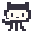

SWEEP THE GRAPH. FLAG THE BUGS. SHIP THE RELEASE.

PULL_REQUEST_TEMPLATE.md
Your first click is always safe. Uncover every clean commit square and flag hidden bugs before merging to main.
CONTRIBUTING.md
Mona is auditing the contribution graph before a release. Uncover every clean commit tile without triggering a hidden bug. Your first revealed tile in any repository is guaranteed to open a safe 3×3 neighborhood.
← ↑ ↓ → or W A S D move the cursor. Space or Enter performs the current mode action (or chords on a revealed number). F flags a bug. C chords. X toggles Reveal/Flag mode. R starts a new board. P or Esc pauses. M mutes all audio.
Click or tap a tile to reveal it. Right-click (or switch Mode: Flag on touch screens) to plant a bug flag. Click, double-click, or tap a revealed number when its adjacent flags match to chord all remaining neighbors.
Your best score and fastest clear time for each repository size are saved locally in this browser. The game pauses automatically when its window loses focus.